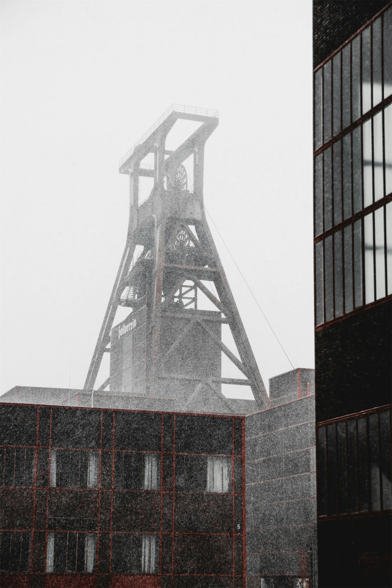
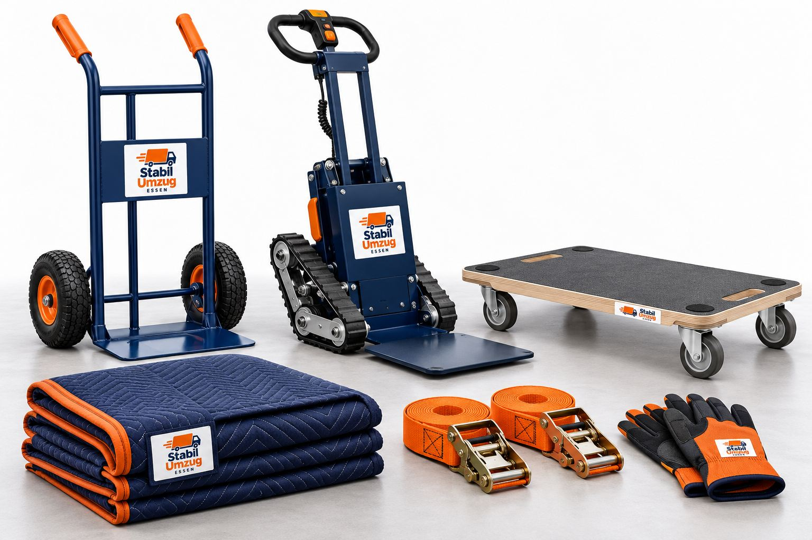
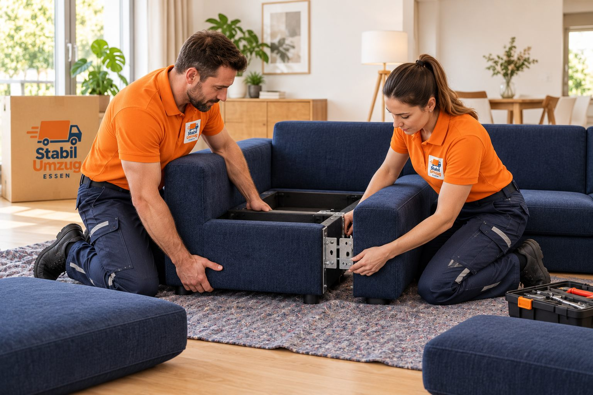
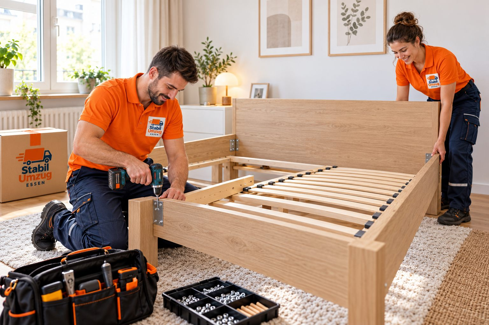

Moving in Essen-Rüttenscheid
Moves, clear-outs, household clearances and transport in Essen-Rüttenscheid – with a fixed crew, our own van and a free quote within 24 hours.

Route and drive time at once.
Your starting point is already filled in – enter the destination and see distance, drive time and map.
- 9 kmDistance
- approx. 22 minDrive time
- within 24 hQuote
- 7 daysReachable
To calculate, we send the places to Google Maps via our server. We store postcode and town only, anonymously.
Your move in Essen-Rüttenscheid.
- Many old buildings without a lift and hardly any free parking around Rüttenscheider Straße: a no-parking zone almost always pays off here.
- Short trip: short-notice dates are often possible, even several runs in one day.
- Small jobs such as single pieces of furniture or a cellar clear-out are especially worthwhile here.
- A no-parking zone in Essen-Rüttenscheid is issued by the traffic authority of the City of Essen – on request we apply for it for you.
- Essen-Holsterhausen17 min from us
- Essen-Bredeney25 min from us
- Südviertel
- Stadtwald
How your move works.
- 01
Plan
Enter rooms and furniture in the moving planner – you see volume, vehicle and crew right away.
Open the planner - 02
View
On request a free viewing in Essen-Rüttenscheid – on site or by video.
Book a time - 03
Move
Our crew arrives on time, protects your furniture with blankets and secures everything in the van.
- 04
Arrive
We carry everything into the right rooms and reassemble furniture on request.
Furniture assembly
Careful from the first box on.



Book a viewing in Essen.
Pick a free time online – we come to you or look at the rooms by video. Confirmation by email right away.
Moving in Essen-Rüttenscheid: briefly answered.
What does a move in Essen-Rüttenscheid cost?
The price depends on the amount, floor, lift, carrying distance and distance. We calculate every line personally and send you the free quote within 24 hours.
How quickly can you be in Essen-Rüttenscheid?
From our depot at Karlstraße 32 it is 9 km, about 22 minutes by car according to Google Maps – longer in rush hour.
Do you also do clear-outs and transport in Essen-Rüttenscheid?
Yes. Besides moves we clear cellars, attics and whole flats and transport single pieces of furniture – in Essen-Rüttenscheid and across the Ruhr area.
Do you come to Essen-Rüttenscheid for a viewing?
Yes, free and non-binding. Book a free time online – on site in Essen-Rüttenscheid or by video. The confirmation arrives by email right away.
Do I need a no-parking zone in Essen-Rüttenscheid?
It depends on the street: if there is no room for the van in front of the house, it almost always pays off. The City of Essen is responsible – we advise you and apply for it on request.
Ask for free. Reply within 24 h.
Move, clear-out, household clearance or transport: we send your personal, non-binding quote within 24 hours – via WhatsApp or email.